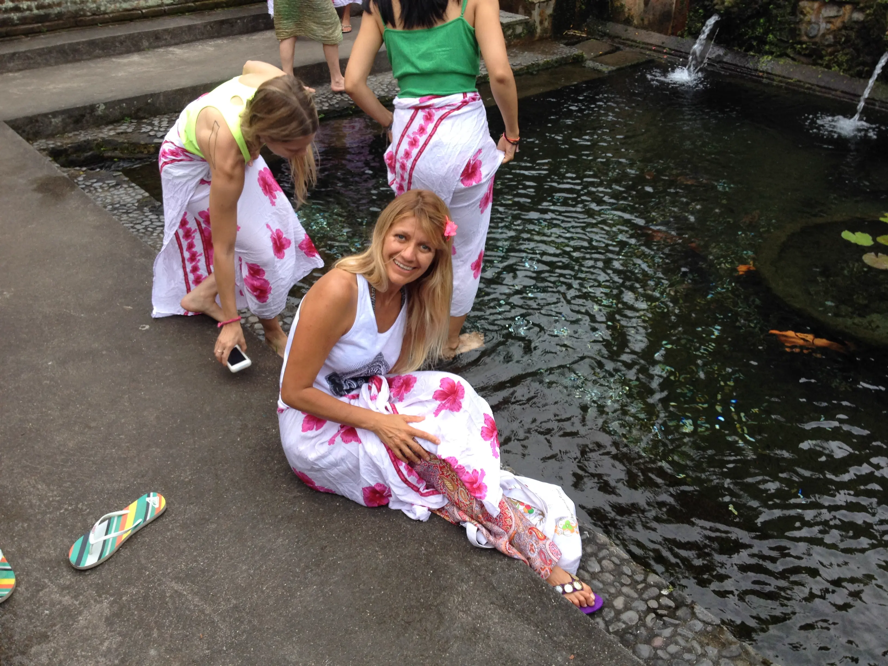
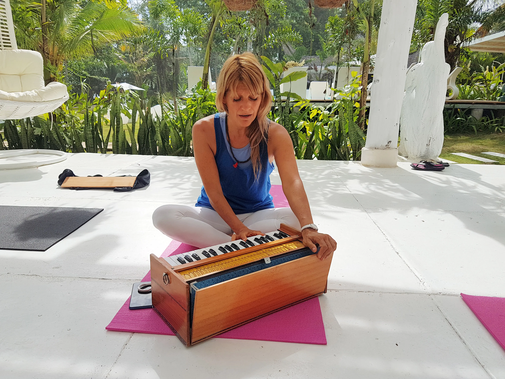

Ayudo a cafeterías, restaurantes, hoteles boutique y espacios wellness a construir negocios más rentables, organizados, sostenibles y con identidad propia.
Me recibí en la Universidad Nacional de Córdoba y viví más de quince años en Suiza, trabajando en el sector financiero junto a clientes internacionales. Allí aprendí que ningún negocio crece por azar: crece con estrategia clara, procesos bien diseñados y decisiones basadas en datos.
Con el tiempo sentí la necesidad de entender los negocios desde un lugar más humano, donde la alimentación y el bienestar también tuvieran lugar. Recorrí distintos países y me formé como Chef Vegana y Crudivegana, Coach en Nutrición Holística (Institute for Integrative Nutrition, Nueva York), especialista en alimentación ayurvédica en India, y Profesora de Yoga.


Ese recorrido me llevó a Costa Rica, donde pasé siete años como Wellness Manager de un hotel boutique, integrando gastronomía, hospitalidad y bienestar en una misma propuesta. Allí confirmé algo que hoy es el corazón de LAB: la rentabilidad y el propósito no compiten — cuando se integran con estrategia, se potencian.
LAB Gastronomy Consulting une todo ese recorrido: estrategia financiera, gestión gastronómica, hospitalidad y bienestar, en un mismo enfoque. Trabajamos análisis financiero, optimización de procesos, ingeniería de menú e identidad de marca — porque el crecimiento real no depende de un área, depende de cómo trabajan todas juntas.
Hoy las personas buscan lugares con identidad y marcas con las que conectar. Los negocios, por su parte, necesitan estructura y decisiones estratégicas para crecer de forma sólida. En LAB unimos esos dos mundos.
La rentabilidad sostiene un negocio. La identidad le da personalidad. La experiencia crea el recuerdo. Cuando esas tres dimensiones trabajan en armonía, los negocios gastronómicos crecen de forma sostenible.
Un problema común en el mundo gastronómico y hotelero en esta nota Laura Bailone nos abre los ojos, ¿Qué pasa detrás de un restaurante exitoso pero poco rentable? ¿Será que se puede ganar más vendiendo menos?
Leer el artículo